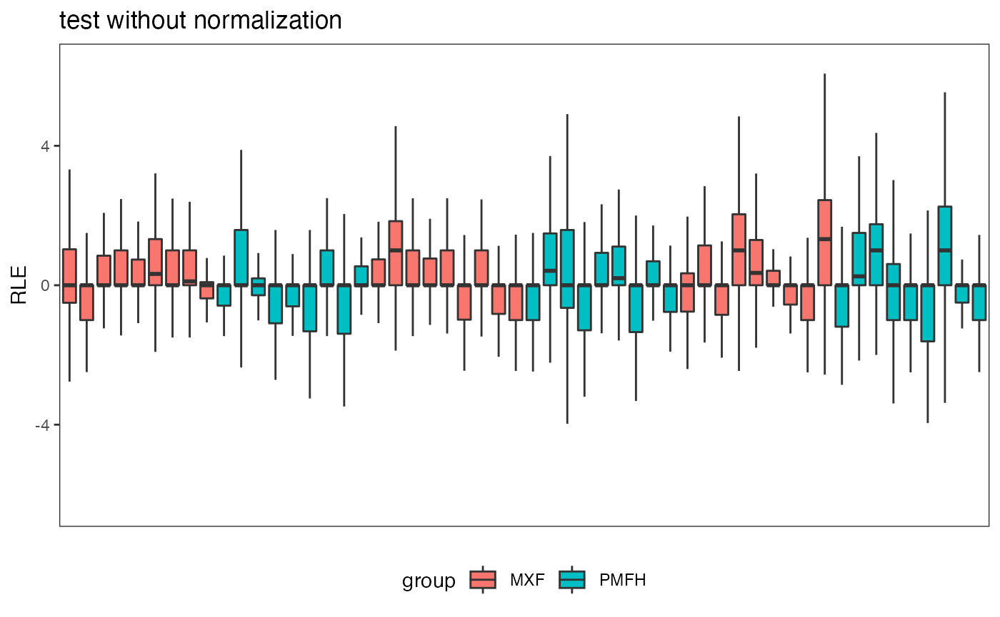

Introduction to DepthNorm Figure Functions
Intro_Figure.RmdIn this article, we will present how to use the included figure functions in this package.
Volcano Figure
The results from the differential expression analysis are needed for generating volcano plot. 0.01 is taken as p-value cut-off point, and the red dots represent for the genes differentially expressed.
voom.benchmark <- DE.voom(data.benchmark, data.group) fig.volcano(voom.benchmark, title = "Volcano Plot")

Relative Log Expression Plot
The relative log expression plot shows the deviation from the median expression by extracting the median for the gene expression, and each boxplot represents for one sample.
fig.RLE(data.test, data.group, "test without normalization")

Concordance At The Top Plot
Concordance at the top figure compares the concordance of the p-values obtained from benchmark data without normalization and normalized test data. Users could apply their own normalization method to our test data, and input the result p-values to this function to compare with other popular methods.
t <- runif(1033) names(t) <- rownames(data.test) fig.CAT(MethodsCompare = c("norm.none", "norm.TMM", "norm.SVA", "norm.TC"), MethodNew = "Example", pvalues = t) #> Number of significant surrogate variables is: 1 #> Iteration (out of 5 ):1 2 3 4 5

Scatterplot for FNR and FDR
Scatter plot for selecting normalization methods based on golden standards. Users could input the golden standards (list of genes which are truly differential expressed), and the raw data and sample information. This function will then calculate the FNR and FDR for the selected normalization methods.
truthgene <- DE.voom(data.benchmark, data.group)$id.list fig.FDR_FNR(data.test, data.group, MethodsCompare = c("norm.none", "norm.TMM", "norm.SVA", "norm.TC"), truth = truthgene) #> Number of significant surrogate variables is: 1 #> Iteration (out of 5 ):1 2 3 4 5 #> Warning: `arrange_()` is deprecated as of dplyr 0.7.0. #> Please use `arrange()` instead. #> See vignette('programming') for more help #> This warning is displayed once every 8 hours. #> Call `lifecycle::last_warnings()` to see where this warning was generated.